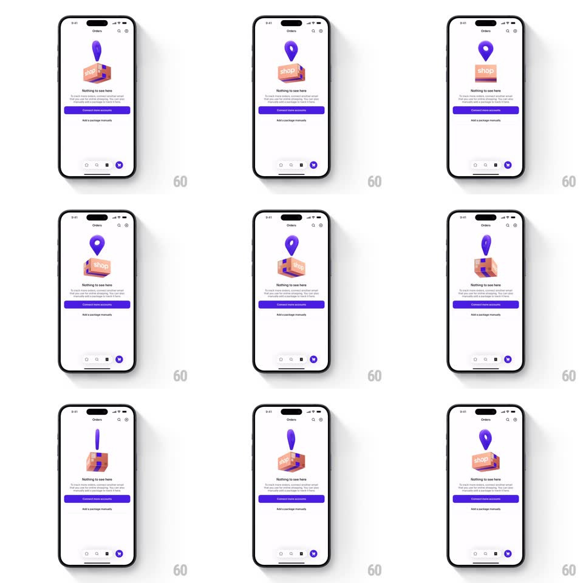

Media
Frame-by-frame

Rebuild this interaction 1:1: Shop's empty Orders screen - a 3D cardboard box with the shop logo spins slowly while a glossy purple map pin bobs and rotates above it, looping forever over "Nothing to see here".

Rebuild this interaction 1:1: Shop's empty Orders screen - a 3D cardboard box with the shop logo spins slowly while a glossy purple map pin bobs and rotates above it, looping forever over "Nothing to see here". ## Integration Integration: stack-agnostic spec - springs given as stiffness/damping, timed motions as duration + curve; map every value to your framework and animation library of choice. ## Scene White Orders screen: centered 3D illustration (a small cardboard parcel with tape and the "shop" wordmark, a purple location pin hovering over its top flap), "Nothing to see here" headline, two gray caption lines, a purple "Connect Gmail account" button, and "Add a package manually" text link; standard tab bar. ## Motion spec Pattern: idle 3D turntable with bobbing pin. - The box rotates on its vertical axis continuously (~10s per revolution, linear, slight 15deg tilt toward camera). - The pin bobs vertically (translateY +-10px, 2.2s sine) and counter-rotates slowly (~14s per revolution) so it reads as floating, not attached; its soft shadow on the box lid tracks the bob (shadow scale/opacity breathing with height). - Twice per loop the pin tips a few degrees toward the viewer (rotate +-8deg, 1s ease) - a small personality beat. - Entry: the whole illustration scales up from 0.85 with a soft spring (~280/20), headline and buttons fading up staggered 120ms apart. ## Calibration - All motion is ambient and seamless - no visible loop point. - Purple is the brand accent on white; the box stays kraft brown. ## Reduced motion Static illustration. ## Don't miss - The pin's shadow ON the box is what sells the 3D - keep it synced to the bob. - The loop must run at a rock-steady framerate; any jank here reads as a broken app.